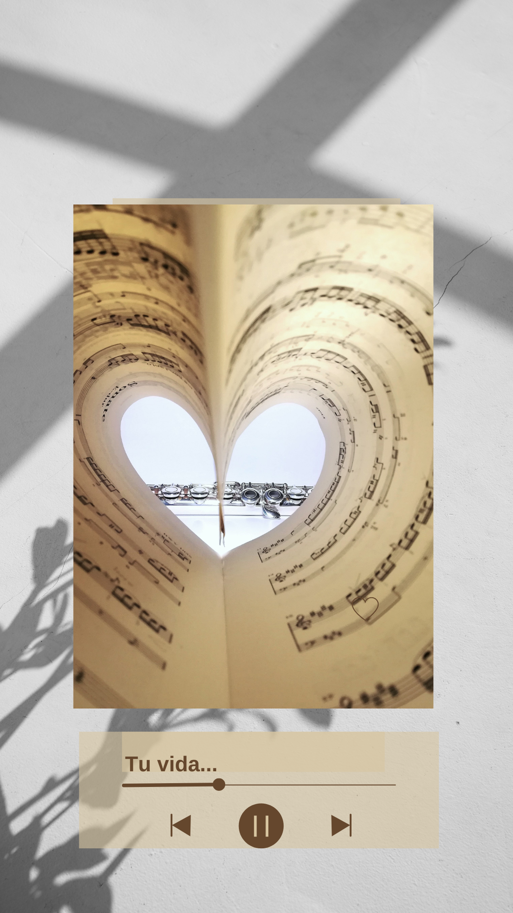

MauRock no nace para mostrar una historia, sino para abrir espacios donde las personas puedan detenerse, escuchar y conectar con lo que están viviendo.
Quiero llevar esta experiencia a mi comunidad
Hay momentos en la vida en que todo sigue igual por fuera… pero por dentro ya cambió para siempre. Esta canción nace desde ese lugar: cuando entiendes que no puedes volver atrás, pero tampoco sabes bien cómo seguir adelante.
Mauricio José Pinto Basso, profesor de música y guitarrista de Servicentro, crea MauRock como una forma de transformar experiencias en canciones.
En medio de su proceso con el cáncer, la música aparece como un canal para expresar, ordenar y compartir lo vivido.
No se trata solo de música. Se trata de encontrar un lenguaje para aquello que nos toca vivir.
En mi caso, ese lenguaje fue la música. El tuyo… ¿cuál es? ¿Y el de los tuyos?
Estos encuentros abren un espacio donde las personas pueden detenerse, escuchar y comenzar a darle forma a lo que están viviendo.
• Colegios → estudiantes que necesitan expresar lo que viven • Empresas → equipos que necesitan reconectar • Comunidades → personas que necesitan ser escuchadas
Quiero llevar esta charla a mi comunidad